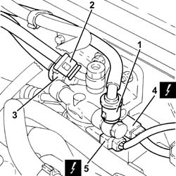
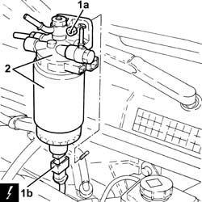

1044B10 FUEL FILTER ASSEMBLY - R + R OR REPLACE
- Path
- Procedures > 10 ENGINE UNIT > 1044 FUEL CIRCUIT PUMP/S AND DEVICES > 1044B FUEL FILTERS > 1044B10 FUEL FILTER ASSEMBLY - R + R OR REPLACE
- Kind
- repair procedure (removal / refitting; the operation number is the code)
- Applies to
- engines: 1.9 JTD 16V; all production periods
- Interactive page
- https://sloeber94.github.io/elrnDB-aGt/en/#/125001010
Applies to: engines: 1.9 JTD 16V; all production periods
 Removing
Removing
 Refitting
RefittingPosition the vehicle on the ramp
Ensure that the ignition key is in the OFF position, then disconnect the negative battery terminal (-).
Name | Connector | |
|---|---|---|
- | Battery | See A1B BATTERY ( BATTERY NEGATIVE ) |
Proceed with removal
- 1016A10 sound-proofing cover - r + r
Proceed with removal
1. Disconnect the quick-release connector for the front fuel supply pipe, fuel filter side.
Op. 7055B54 UNDER-ENGINE GUARD - R R
2. Disconnect the rapid attachment on the fuel return pipe to the fuel return manifold pipe, fuel filter side.
3. Disconnect the quick-release connector for the fuel supply pipe to the pressure pump, fuel filter side.
4. Disconnect the electrical connection from the fuel temperature sensor.
5. Disconnect the electrical connection from the fuel pre-heating device.
Name | Connector | |
|---|---|---|
4 | Fuel heating resistance and temperature sensor | See K100A FUEL HEATING RESISTANCE AND TEMPERATURE SENSOR ( CONNECTORS ) |
Name | Connector | |
|---|---|---|
5 | Fuel heating resistance and temperature sensor | See K100B FUEL HEATING RESISTANCE AND TEMPERATURE SENSOR ( CONNECTORS ) |

Applies to: engines: 1.9 JTD 16V; all production periods
1. Undo the nuts (1a), raise the fuel filter sufficiently to disconnect the electrical connection from the water presence sensor in the fuel filter (1b).
Name | Connector | |
|---|---|---|
1b | Water in diesel filter sensor | See K31 WATER IN DIESEL FILTER SENSOR |
2. Remove the fuel filter.

Applies to: engines: 1.9 JTD 16V; all production periods
Refitting
RemovingConnect the electrical connection to the water-in-fuel filter sensor, then refit the complete fuel filter in its seating and secure with its nuts.
Connect the electrical connection to the fuel pre-heating device.
Connect the electrical connection to the fuel temperature sensor.
Connect the quick-release connector for the fuel supply pipe to the pressure pump, fuel filter side.
Connect the rapid attachment of the fuel return pipe to the fuel return manifold pipe, fuel filter side.
Connect the quick-release connector for the front fuel supply pipe, fuel filter side.
Proceed with refitting
Op. 7055B54 UNDER-ENGINE GUARD - R R.
Proceed with refitting
- 1016A10 sound-proofing cover - r + r
.
Connect the negative (-) battery terminal
Remove the car from the ramps.